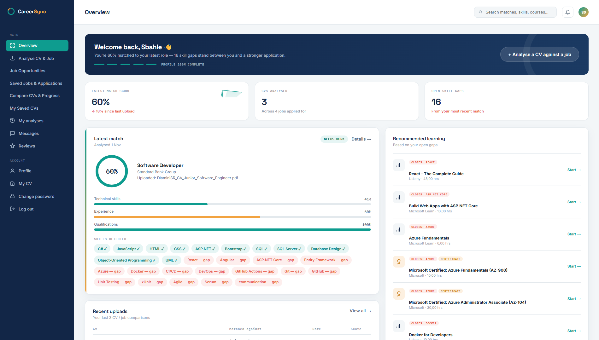
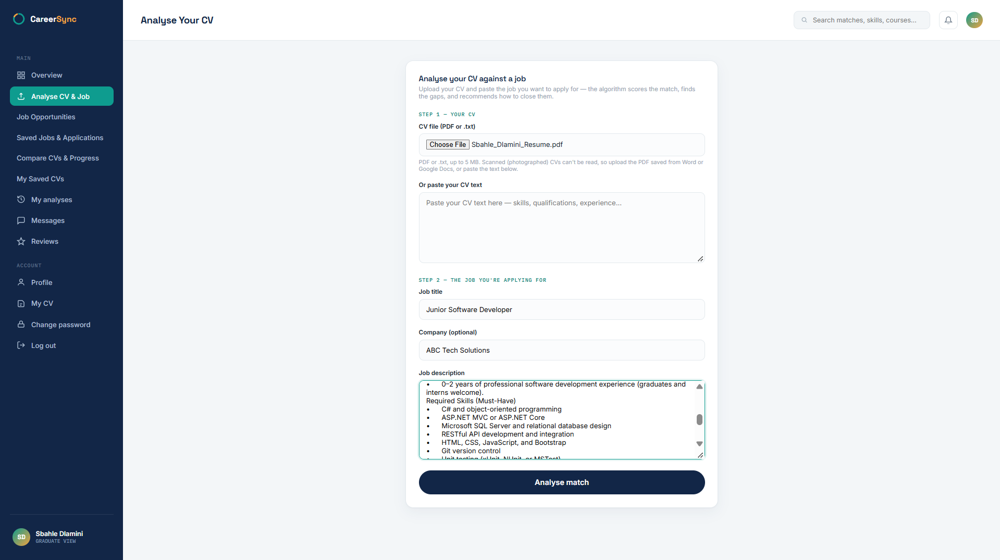

Open to junior / graduate developer
opportunities
HELLO, I'M SBAHLE RIAAN DLAMINI
Building practical software with purpose.
C# / .NET Developer / Computer Science Honours Student
I create web applications, connect APIs and databases, and turn complex problems into thoughtful software. I love collaborating with developers, sharing knowledge and learning through building.
developer.cs
01public class Developer
02{
03 string focus = "C# / .NET";
04 bool keepsLearning = true;
05 string mindset = "Build. Share. Grow.";
06}
Ready to buildC#
· ASP.NET · SQL
SQL Server
REST APIs
Team collaboration
01 / ABOUT ME
Curious mind.
Builder's mindset.
I'm a BSc Computer Science and IT graduate from the University of the Free State, currently pursuing Honours studies in Computer Science / IT.
My projects span full-stack web development, C# and ASP.NET MVC, SQL Server, REST API integration and Java-based Android development. I enjoy understanding how systems fit together, from a clean interface to a reliable backend.
I actively engage with fellow developers to exchange ideas, work through technical challenges and sharpen my skills. I'm excited to keep growing through real-world projects and collaborative software engineering.
BSc Computer Science & IT
University of the Free State · 2024
University of the Free State · 2024
Honours studies
In progress · 2026
In progress · 2026
02 / TECHNICAL TOOLKIT
Technologies I work with.
Tools and concepts I've used or explored through projects, coursework and continued learning.
Web & Backend
Data & Databases
Tools & Platforms
Engineering Practices
Core Strengths
Skill levels vary by technology; this list includes practical project experience as well as foundational exposure.
03 / SELECTED WORK
Projects that tell my story.
A mix of web, API, database and mobile application work.
CareerSyncILLUSTRATIVE PREVIEW
CV ↔ Job alignmentMatch
analysisCompare skills, qualifications &
experience
Strengths identified Development
insights
Conceptual dashboard illustration · not an application screenshot or real match result
FEATURED · HONOURS PROJECT
CareerSync
A data-driven CV and job description matching platform that compares skills, qualifications and experience, identifies gaps, and presents improvement recommendations in an interactive dashboard.
Explore the case study Source repository link available once confirmed02 / FULL-STACK +
MOBILE
AuroBank
A banking application with web-based functionality, backend services, a SQL Server database and Android integration, developed using C# and Java.
View on GitHub03 / ANDROID
Flex IT
A Java-based mobile application focused on simplifying facility bookings and reservations at the University of the Free State.
View on GitHubPROJECT DEEP DIVE / CAREERSYNC
From job requirements to actionable insights.
CareerSync explores how a CV can be compared with a job description to help users identify areas of alignment and opportunities to improve.
Compare profiles
Evaluate skills, qualifications and experience against the requirements of a role.
Surface match scores
Calculate an alignment score and highlight missing or weaker competencies.
Guide improvement
Present matching results and personalised recommendations in an interactive dashboard.
SYSTEM OVERVIEW
How the pieces fit together
A high-level conceptual architecture based on the documented project components, not a source-code-level diagram.
Web
interfaceHTML · CSS · JavaScript · Bootstrap
ASP.NET
MVCC# · application logic · matching
Data
layerMicrosoft SQL Server
RESTful API integration is also part of the project. Exact endpoints and deployment topology are not specified here.
APPLICATION GALLERY


My contribution: Designed and developed CV/job matching functionality, scoring and gap identification, dashboard presentation, and SQL Server database operations as described in my project CV.
Ask me about this project04 / EXPERIENCE & EDUCATION
Learning by doing and sharing.
FEB 2026 — PRESENT
C# Programming Intern
University of the Free State · QwaQwa
Support first-year C# programming sessions, explain foundational programming and OOP concepts, help students debug their code, and provide constructive feedback on practical exercises.
2026 — IN PROGRESS
Honours Studies · Computer Science / IT
University of the Free State
Continuing advanced studies while developing CareerSync, a database-driven CV and job matching web application.
2024
BSc Computer Science and IT
University of the Free State
Built foundations in algorithms, data structures, software engineering, databases, web and mobile development, systems analysis and testing.
05 / LET'S CONNECT
Have a project or opportunity in mind?
I'm open to junior and graduate software development opportunities, collaborative projects and conversations about C#, .NET and building better software.
Send me an email